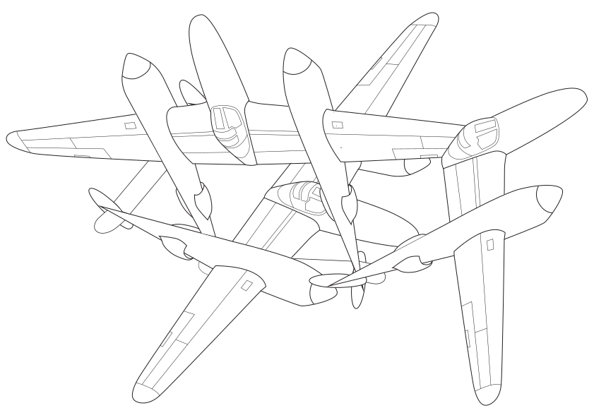

01 RESEARCH
RESEARCH
I mainly looked into two texts for this class: What's Next for Text? by Richard A. Lanham, and The Posthuman by Rosi Braidotti. There were already so many good quotes to pull from these that I had to limit myself from sifting through more readings.
Something interesting that he touches on is the belief that the art of calligraphy has expired, and a successful writing system is one where someone isn’t expected to think at all. It’s a passive instrument of the spoken word. I think about this sentiment when we work with very simple fonts like Helvetica and Courier. I think words are getting ever so smarter with humans (although, I must acknowledge the day and age of social media that introduces some pretty unnecessary words in our vocabulary). It’s the difference between traditional and contemporary art. It’s so very obvious that some pieces of art are beautiful and extremely skillful. But that’s the thing — it’s obvious, and that’s the point. A lot of people don’t get contemporary art — they get confused, it enrages them. And it takes a lot more effort to understand. I think once we take away all those embellishments, the meaning begins to appear at the forefront of the work. It’s for art for the thinkers, and gives a chance to those that aren’t born as prodigies in 18th century realism.
Frankly, this text was quite hard for me to fully understand, but some parts I found really profound. I have always been very interested in the natural world and the organic, all things that were on the earth before us. I think it’s interesting that Braidotti considers us beyond who we are biologically, and accepts the modern and technological world rather than rejecting it.
One section I really enjoyed was the chapter The Inhuman: Life beyond Death:
Please make yourself comfortable in My Personal Gallery
WHAT’S NEXT FOR TEXT
Richard A. Lanham is an American literary scholar. In this reading, he describes the changes of the alphabet when transforming from physical print to digital screens. He a-likens this to 2D and 3D spaces, where 2D space is flat and unchanging, and 3D space is behavioural, depending on human activity and interference.
Something interesting that he touches on is the belief that the art of calligraphy has expired, and a successful writing system is one where someone isn’t expected to think at all. It’s a passive instrument of the spoken word. I think about this sentiment when we work with very simple fonts like Helvetica and Courier. I think words are getting ever so smarter with humans (although, I must acknowledge the day and age of social media that introduces some pretty unnecessary words in our vocabulary). It’s the difference between traditional and contemporary art. It’s so very obvious that some pieces of art are beautiful and extremely skillful. But that’s the thing — it’s obvious, and that’s the point. A lot of people don’t get contemporary art — they get confused, it enrages them. And it takes a lot more effort to understand. I think once we take away all those embellishments, the meaning begins to appear at the forefront of the work. It’s for art for the thinkers, and gives a chance to those that aren’t born as prodigies in 18th century realism.
THE POSTHUMAN
Rosi Braidotti is an Italian feminist philosopher. She provides a look into the posthuman world where individual humans become interlinked with the non-human, the technological, the genetically modified. She encourages us to make choices that take into consideration all forms of ‘life’, blurring the distinction between what is typically human, and what is beyond to make sense of our identities.
Frankly, this text was quite hard for me to fully understand, but some parts I found really profound. I have always been very interested in the natural world and the organic, all things that were on the earth before us. I think it’s interesting that Braidotti considers us beyond who we are biologically, and accepts the modern and technological world rather than rejecting it.
One section I really enjoyed was the chapter The Inhuman: Life beyond Death:
‘My vitalist notion of death is that it is the inhuman within us, which frees us into life. Each of us is always already a ‘has been’, as we are mortal beings. Desire as the ontological drive to become (potentia) seduces us into going on living. If sustained long enough, life becomes a habit. If the habit becomes self-fulfilling, life becomes addictive, which is the opposite of necessary or self-evident. Living ‘just a life’ therefore is a project, not a given, because there is nothing natural or automatic about it.’
Death is the factor that breathes us into life, in which it runs at a high speed, ever-changing energy: ourselves, our passions, our desires. If we wish to die, it is considered the moment we want to really live. This is the reason why I ultimately chose this novel to form my major project around. It made me question and spiral the most.
ARTEFACTS
There are quite a few things I picked up along the way, including illustration, geometry, colour, clusters. I thought about ways these could relate to code when I saw them, can you also relate them? Please make yourself comfortable in My Personal Gallery
PROTOTYPE
I have accumulated a myriad of paper prototypes filled with dormant ideas. I have this problem where I hate to work in front of others, especially during the ideating stage. I’m not one to think out loud. The crazy 8 exercises challenged this, as we are forced to think quickly. Unsurprisingly, the first every crazy 8 of mine was terrible and unimaginative. It was like I was scared of a piece of paper. Surprisingly, the last ever crazy 8 for the SKO formed some decent ideas. You somehow become more intentional and less intentional at the same time. It allows you to be creative and pull ideas out of a hat. It was the same with my concrete poetry and website sketches.
My first website ideas were simply fine. For some reason I was attached to these little people icons because I thought it would be cool to interact with them. That wasn’t the point of this specific assignment, and these representations were far too literal.
My chosen paper prototype for Brief 1 was based on a long quote by Lanham,

To reiterate the idea from my Brief 1 pdf: My concept is for the viewer to load into a 3D space. They land on a platform, which are 3D words viewed horizontally, and view other platforms around it. Using manoeuvres similar to Minecraft, the user uses the mouse to look around and arrow keys to go forward, left, and right, and spacebar to jump. The user's initial instinct is to jump around from platform to platform. Eventually, if the user falls off this structure (or they don’t, and just stay jumping around in the 3D world, wondering what this purpose is) and they reach the ground. Looking around the white walls and nothingness aimlessly, the user will look straight up, revealing that the platforms they were on actually spell out text.
I know that the point of a paper prototype is for it to be scrappy and expendable, but I really enjoyed the design process of creating this. I carefully cut a frame to represent a desktop, and RISO printed the 3D blocks. I cut out letters from magazines as well, all in an attempt to bring in textures before coding it, where tactility no longer matters.
Clearly I didn’t go with this option for my final project as it was far too difficult, even though I was trying hard to make it work. As I was looking through my readings again, one line grasped me from Braidotti’s text.
Immediately, when building this sketch, Andy gave me some advice. To remove the text part entirely, and have a clock counting down that resets once you click the button. I liked the idea of removing the text as it was too in-your-face. I still wanted to keep the juxtaposing black and white scenes however, pointing to life and death. I knew I wanted something that was constantly running, and thought about a looping sunset, or beach. I finally came up with the idea of train tracks, as it would also be easiest to build. Thus, the final project was born.
My first website ideas were simply fine. For some reason I was attached to these little people icons because I thought it would be cool to interact with them. That wasn’t the point of this specific assignment, and these representations were far too literal.
My chosen paper prototype for Brief 1 was based on a long quote by Lanham,
'We want the shape of words to look like the structure of thought they express, if only because we evolved to live in a world of shapes. We were born into three dimensions, not two (or four, or however many modern mathematics can devise), and we feel intuitively at home nowhere else.'
To reiterate the idea from my Brief 1 pdf: My concept is for the viewer to load into a 3D space. They land on a platform, which are 3D words viewed horizontally, and view other platforms around it. Using manoeuvres similar to Minecraft, the user uses the mouse to look around and arrow keys to go forward, left, and right, and spacebar to jump. The user's initial instinct is to jump around from platform to platform. Eventually, if the user falls off this structure (or they don’t, and just stay jumping around in the 3D world, wondering what this purpose is) and they reach the ground. Looking around the white walls and nothingness aimlessly, the user will look straight up, revealing that the platforms they were on actually spell out text.
I know that the point of a paper prototype is for it to be scrappy and expendable, but I really enjoyed the design process of creating this. I carefully cut a frame to represent a desktop, and RISO printed the 3D blocks. I cut out letters from magazines as well, all in an attempt to bring in textures before coding it, where tactility no longer matters.
Clearly I didn’t go with this option for my final project as it was far too difficult, even though I was trying hard to make it work. As I was looking through my readings again, one line grasped me from Braidotti’s text.
'Life is passing and we do not own it.'
I had sort of an immediate idea come to mind, and it was a ticking clock glitching, every line was a black stroke, and you would switch the clock off, in which the screen turns black and appears within the clock face. I went straight to Illustrator instead of paper and pen to mimic how it would look as close to the website as possible.
Immediately, when building this sketch, Andy gave me some advice. To remove the text part entirely, and have a clock counting down that resets once you click the button. I liked the idea of removing the text as it was too in-your-face. I still wanted to keep the juxtaposing black and white scenes however, pointing to life and death. I knew I wanted something that was constantly running, and thought about a looping sunset, or beach. I finally came up with the idea of train tracks, as it would also be easiest to build. Thus, the final project was born.

EXPERIMENT
The first time I ever learned to code was my first semester of Graphic Design in the University of Melbourne. I had managed to get to the second assignment given to the class, which was to make a working calculator. I made my calculator quite lovely with earth toned buttons to distract from the fact that it completely failed to work. I received a 3/10 for that assignment (full marks for visuals!), and failed the rest of the course.
Stepping into this studio, I was determined to understand the language of computers, and eventually express my art through code. The structure of this studio was perfect for my style of learning. Sitting down and having Karen hold our hands through every line of code helped me immensely. If I learn solely through youtube or reading, half of it goes straight through my brain. I knew I was at a point where my confidence was growing once I would open Processing and automatically type createCanvas(windowWidth,windowHeight);, and understand how to use variables. It was somewhat hard for me to understand how js, html, and css all come into play together, but I have come to appreciate these different building blocks.
Most of my sketches are exact copies of what Karen walked us through on the big screen, with only some that I have tested beyond that point. My very first attempt at code was my html concrete poetry piece, OK?, using the words cyborg and orgy. I only used the break tag to align the words at this point, but I was excited that something I made appeared on the screen like I hoped. My second sketch was a self portrait using p5. It was a great exercise introducing the use of shape functions, such as ellipse(), line(), square(), triangle(), arc(), and learning about the way items layer on top of each other, affecting which shapes have either fill() or noFill(). I couldn't grasp using positions relative to the screen at this point, so I used pixels for placing them, which caused everything to move around the page when I revisited this the next day. I was jealous of BJ’ and Candice’s.
Up next was being introduced to the power of mouseX and mouseY when changing colours and leaving a trail behind the cursor.
The week after, we played around with text and image, learning how to use variables and the function preload() when adding an image to the sketch, as well as introducing new functions such mousePressed(). It sounds silly, but it surprised me that we could use more than just draw(). I thought it would also completely complicate what I’ve understood already, but it was simply another hurdle. Something that is still complicated to me, however, are if and else statements. It’s something that I know how to use because I’ve seen them so many times and know how it’s structured, but I can’t explain it back to you if you asked.
From this point on, it got fun. I started playing around with some original ideas for simple sketches. I use a stamp of my chinese name in this sketch, and pulled the function repaint() and createButton(). I found this really fun at the time, and used this as a base to create a version with tree planting. I taught myself how to create an array of images and have them appear at random using mouseClicked(). I think the possibilities for cuteness are endless.
WebGL was my next opponent during the time I was trying to bring my What’s Next for Text paper prototype into fruition. They were only very basic steps, such as creating a rotating cube and drawing with points. These were to understand how to use the z axis in conjunction with angles and determining the speed of rotation. I followed this youtube video of a kid giving a tutorial. In my defence, it was very easy to follow.
The classes started to get into more challenging functions, such as using sound. My sound sketch didn’t really work properly. If the mouse is pressed, the doorbell would ring, and with the spacebar, the sound should stop (I couldn’t get the sound to start playing again after). We were also introduced to the map() function, which is on the same level of understanding as the if-else statements to me. I understand it as map(variableToWatch, minimumIn, maximumIn, minimumOut, maximumOut), but sometimes the values I input are still wrong. I just need more practice because I can see this being a useful tool.
My favourite, and last, sketch of the studio was the wiggly letters sketch using the class method. Little letters appear upon mouse click, and if you spam click, the screen fills with a galaxy of wiggly letters. I had seen class{} used in many other examples of p5.js sketches found online, and it felt rewarding to begin to understand its use and advantages for randomising things. I had unlocked new vocabulary of code, and I have advanced so much compared to the first sketch I ever attempted.
After this whole journey, my major project used very few of these methods. Through a lot of p5.js learning, I found that I neglected html and css. I was surprised when I found it more straightforward, and wanted to give these languages more attention for instances such as working with images as buttons, e.g. <> button tag vs createButton(). I did however, perfect my understanding of building shapes on p5.js with translate(), beginShape(), and respectively endShape(). I didn’t think I would use Copilot for my code, as I wanted to learn everything first hand, but managed to use it as a base for my train tracks. I’ve found a sweet spot of using it as a learning tool and building block, then tweaking it to suit my own (which is what everyone should do anyways). My final code for that project is definitely crude and imperfect. It loads weirdly when switching back and forth, and I use black shapes to cover the extending moving lines to frame them as train tracks within the clock shape. Despite this, I’m proud of the way I’ve manoeuvred around making this come together.
Stepping into this studio, I was determined to understand the language of computers, and eventually express my art through code. The structure of this studio was perfect for my style of learning. Sitting down and having Karen hold our hands through every line of code helped me immensely. If I learn solely through youtube or reading, half of it goes straight through my brain. I knew I was at a point where my confidence was growing once I would open Processing and automatically type createCanvas(windowWidth,windowHeight);, and understand how to use variables. It was somewhat hard for me to understand how js, html, and css all come into play together, but I have come to appreciate these different building blocks.
Most of my sketches are exact copies of what Karen walked us through on the big screen, with only some that I have tested beyond that point. My very first attempt at code was my html concrete poetry piece, OK?, using the words cyborg and orgy. I only used the break tag to align the words at this point, but I was excited that something I made appeared on the screen like I hoped. My second sketch was a self portrait using p5. It was a great exercise introducing the use of shape functions, such as ellipse(), line(), square(), triangle(), arc(), and learning about the way items layer on top of each other, affecting which shapes have either fill() or noFill(). I couldn't grasp using positions relative to the screen at this point, so I used pixels for placing them, which caused everything to move around the page when I revisited this the next day. I was jealous of BJ’ and Candice’s.
Up next was being introduced to the power of mouseX and mouseY when changing colours and leaving a trail behind the cursor.
The week after, we played around with text and image, learning how to use variables and the function preload() when adding an image to the sketch, as well as introducing new functions such mousePressed(). It sounds silly, but it surprised me that we could use more than just draw(). I thought it would also completely complicate what I’ve understood already, but it was simply another hurdle. Something that is still complicated to me, however, are if and else statements. It’s something that I know how to use because I’ve seen them so many times and know how it’s structured, but I can’t explain it back to you if you asked.
From this point on, it got fun. I started playing around with some original ideas for simple sketches. I use a stamp of my chinese name in this sketch, and pulled the function repaint() and createButton(). I found this really fun at the time, and used this as a base to create a version with tree planting. I taught myself how to create an array of images and have them appear at random using mouseClicked(). I think the possibilities for cuteness are endless.
WebGL was my next opponent during the time I was trying to bring my What’s Next for Text paper prototype into fruition. They were only very basic steps, such as creating a rotating cube and drawing with points. These were to understand how to use the z axis in conjunction with angles and determining the speed of rotation. I followed this youtube video of a kid giving a tutorial. In my defence, it was very easy to follow.
The classes started to get into more challenging functions, such as using sound. My sound sketch didn’t really work properly. If the mouse is pressed, the doorbell would ring, and with the spacebar, the sound should stop (I couldn’t get the sound to start playing again after). We were also introduced to the map() function, which is on the same level of understanding as the if-else statements to me. I understand it as map(variableToWatch, minimumIn, maximumIn, minimumOut, maximumOut), but sometimes the values I input are still wrong. I just need more practice because I can see this being a useful tool.
My favourite, and last, sketch of the studio was the wiggly letters sketch using the class method. Little letters appear upon mouse click, and if you spam click, the screen fills with a galaxy of wiggly letters. I had seen class{} used in many other examples of p5.js sketches found online, and it felt rewarding to begin to understand its use and advantages for randomising things. I had unlocked new vocabulary of code, and I have advanced so much compared to the first sketch I ever attempted.
After this whole journey, my major project used very few of these methods. Through a lot of p5.js learning, I found that I neglected html and css. I was surprised when I found it more straightforward, and wanted to give these languages more attention for instances such as working with images as buttons, e.g. <> button tag vs createButton(). I did however, perfect my understanding of building shapes on p5.js with translate(), beginShape(), and respectively endShape(). I didn’t think I would use Copilot for my code, as I wanted to learn everything first hand, but managed to use it as a base for my train tracks. I’ve found a sweet spot of using it as a learning tool and building block, then tweaking it to suit my own (which is what everyone should do anyways). My final code for that project is definitely crude and imperfect. It loads weirdly when switching back and forth, and I use black shapes to cover the extending moving lines to frame them as train tracks within the clock shape. Despite this, I’m proud of the way I’ve manoeuvred around making this come together.
FLY
Overall, I have really enjoyed CODEWORDS studio. I’m still trying to figure myself out as a designer, and this has confused me even more. I wanted to be a publication designer like the rest of them, but this is way better. To be honest, I didn’t really find an interest in creative coding initially. Coding a website or portfolio, sure. But this? It didn’t really captivate me the same way other types of art do.
I just hadn’t found my style yet. I’ve found that cool text effects and making words wiggle or split into particles doesn’t really move me. I prefer to create an ambience, flesh out one idea and try to execute it well (enough). My favourite piece thus far is Rafael Rozendaal’s page, and greatly inspired my final project.
I think this class has helped me explore beyond the obvious. It was only around week 8 that I started to understand Andy. I remember my very first sketches of ideas for my major project were all too ‘literal’. And I didn’t really get that at first. It was because I hadn't stepped into the world of code yet. I was just dipping my feet, oblivious to the potential of this medium. I think simplicity and minimalism strike me. I love the white space on a screen, even if your instinct is to try and fill it up with beautiful things. I don’t know if I’m at a point where I fully get all this, but I understand a bit more now. I’m getting there. My planetary ring is floating closer towards Andy’s. Most importantly, I look so cool doing coding in the library – and I can brag about this to my other graphic design friends.
I just hadn’t found my style yet. I’ve found that cool text effects and making words wiggle or split into particles doesn’t really move me. I prefer to create an ambience, flesh out one idea and try to execute it well (enough). My favourite piece thus far is Rafael Rozendaal’s page, and greatly inspired my final project.
I think this class has helped me explore beyond the obvious. It was only around week 8 that I started to understand Andy. I remember my very first sketches of ideas for my major project were all too ‘literal’. And I didn’t really get that at first. It was because I hadn't stepped into the world of code yet. I was just dipping my feet, oblivious to the potential of this medium. I think simplicity and minimalism strike me. I love the white space on a screen, even if your instinct is to try and fill it up with beautiful things. I don’t know if I’m at a point where I fully get all this, but I understand a bit more now. I’m getting there. My planetary ring is floating closer towards Andy’s. Most importantly, I look so cool doing coding in the library – and I can brag about this to my other graphic design friends.
**Images on this website are made by me, based on the American fighter jet, Lockheed P-38 Lightning. Credited to my late sister who studied Aerospace engineering, leaving a myriad of plane diagrams for me to sift through. My final submissions at the end of each year are always around the time of her passing, so I’m always thinking about her.